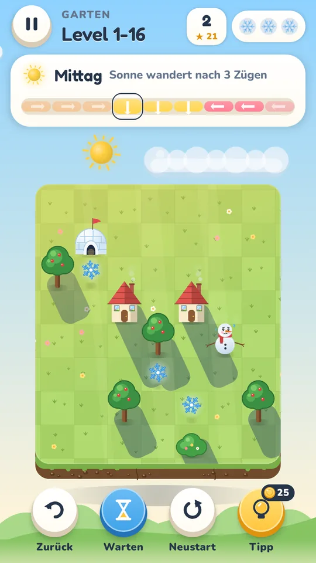
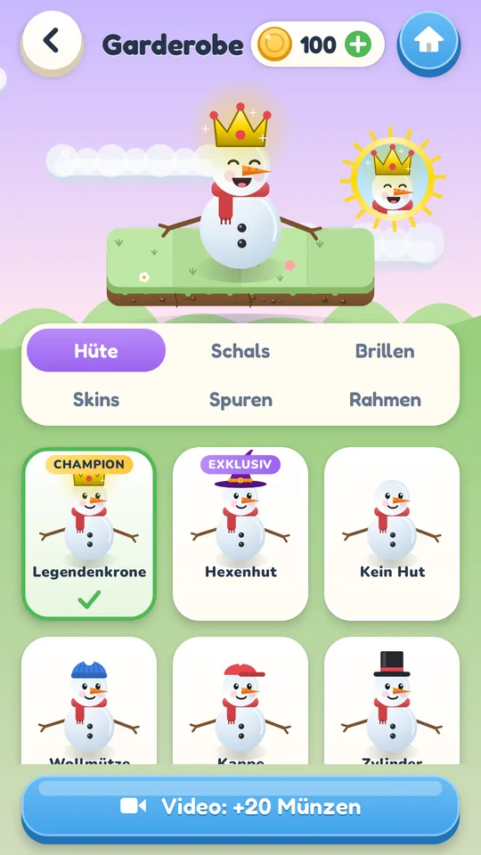

Snowdial
Bleib cool. Bleib im Schatten.
Ein Schneemann im Sommer? Das geht nur mit Köpfchen. Snowdi will zurück in sein Iglu, aber er darf nur im Schatten stehen. Und der wandert mit jedem Zug.
Bald bei Google PlaySnowdial ist gerade im Test. Willst du vorab mitspielen? Schreib uns an snowdial@denkarena.com.

So geht's
Die Sonne wandert über die Insel. Mit jedem Zug ändern sich die Schatten, also musst du vorausdenken.

Morgens
Die Sonne steht links, die Schatten fallen nach rechts.

Mittags
Die Sonne steht hoch. Die Schatten sind nur halb so lang.

Abends
Die Sonne steht rechts, die Schatten fallen nach links.
Nachts ist überall Schatten. Höhere Dinge werfen längere Schatten: Busch 1 Feld, Baum 2, Haus 3. Mit der kürzesten Lösung gibt es den dritten Stern.
Jede Welt bringt neue Ideen
Kisten
Schieb Kisten und bau dir deinen eigenen Schatten.
Eis
Auf Eis schlitterst du, bis dich etwas aufhält.
Portale
Spring durch Portale auf die andere Seite der Insel.
Wind
Der Wind trägt dich ein Stück weiter, ob du willst oder nicht.
Schalter
Geschlossene Tore spenden Schatten, offene lassen dich durch.
Pino
Pinguin Pino läuft dir hinterher und schützt dich mit seinem kleinen Schatten.
Jeden Tag etwas zu tun
Tagesrätsel
Jeden Tag ein neues Rätsel. Deine Serie wächst, und ein Serienschutz rettet sie, wenn du mal einen Tag verpasst.
Denksport
Bewertete Rätsel ohne Rückgängig. Deine Wertung steigt wie beim Schach, vom „Schneeball“ bis zur „Eis-Legende“.
Missionen und Sonnenpass
Drei Aufgaben am Tag und jeden Monat eine neue Saison mit Outfits, Spuren und Rahmen.
Schattenduell
Löse drei Rätsel gegen die Uhr und schlag den Übungs-Bot. Online-Duelle gegen Freunde folgen mit einem Update.
So sieht Snowdial aus




Fair und entspannt
Alle Level kostenlos
Du kannst alle 360 Rätsel ohne Kauf spielen.
Zurück, so oft du willst
Ein Fehler ist kein Drama. Nimm Züge zurück oder hol dir einen fairen Tipp.
Garantiert lösbar
Jedes Level wurde von einem Computer-Löser geprüft.
Leicht zu lernen
Eine Hand zeigt dir im ersten Level jeden Schritt. Lesen musst du dafür kaum.
Häufige Fragen
Was kostet Snowdial?
Snowdial ist kostenlos und zeigt Werbung. Mit „Werbung entfernen“ oder dem optionalen Abo Snowdial Plus spielst du ohne Werbung. Das Abo ist jederzeit in Google Play kündbar.
Brauche ich Internet?
Nein. Alle Level, das Tagesrätsel und der Denksport laufen auch offline.
Gibt es Snowdial für iPhone?
Zuerst erscheint Snowdial für Android. Eine iPhone-Version ist geplant.
Brauche ich ein Konto?
Nein. Dein Spielstand bleibt auf deinem Handy.
Für wen ist Snowdial?
Für alle, die gern knobeln. Die ersten Welten sind leicht, später wird es richtig knifflig.
Fragen, Ideen oder einen Fehler gefunden?
Schreib uns, wir lesen jede Nachricht.
snowdial@denkarena.com